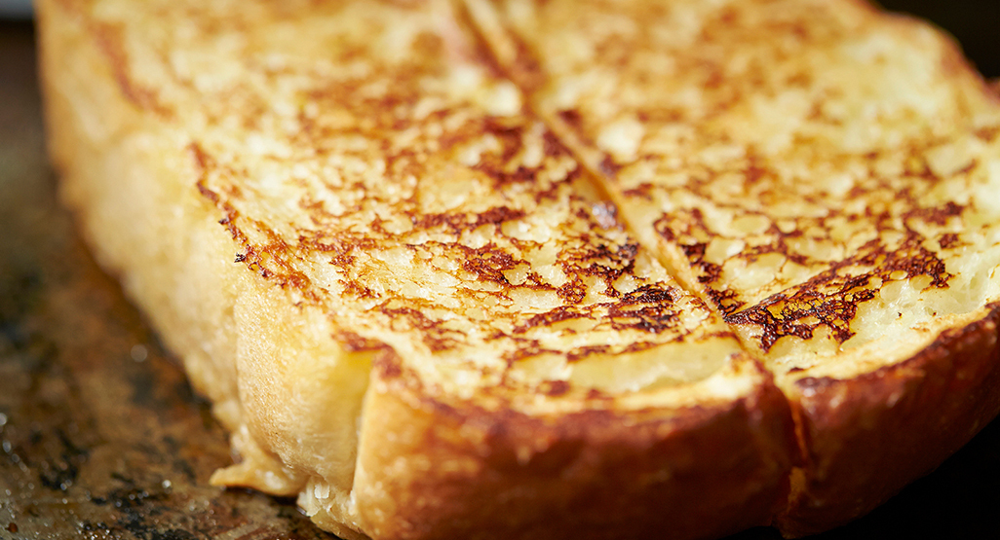

Eggy Bread

Foreword:
In this article I will teach you yet another simple but satisfying meal - Eggy Bread!
Ingredients
Bread - Cheaper the better
3-4 medium eggs
Olive Oil (any cooking oil will work)
Milk ~8tbsp
Instructions:
Crack eggs into a container big enough to submerge the bread in
Add in milk and whisk vigoursly until you have a consistent yellow mixture
Bring pan to heat and add oil
Submerge bread in egg mixture, covering thouroughly
Fry both sides evenly
Serve and enjoy, goes great with some bacon, sausages, or beans (or all three!)